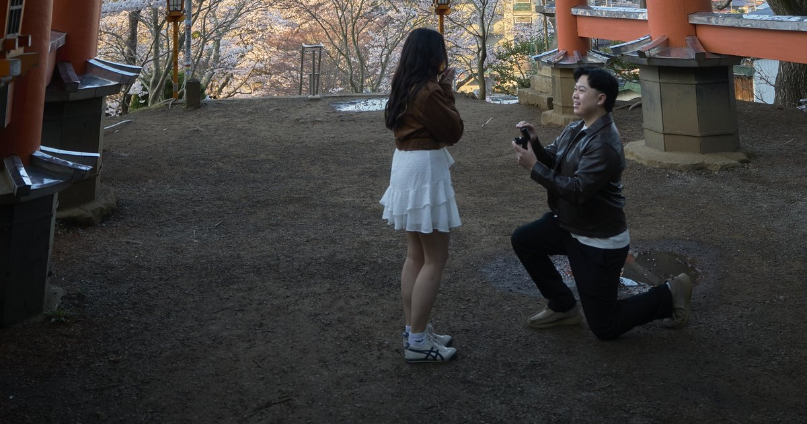

Sandy Zhang
Trips

'26 4 6
Japan · April 3 – 11, 2026
She said yes.
Nhat and Michelle's proposal at Mt. Fuji, and the trip around it: Tokyo, Fuji, Osaka and Kyoto with the crew.

'26 4 6Nhat and Michelle's proposal at Mt. Fuji, and the trip around it: Tokyo, Fuji, Osaka and Kyoto with the crew.